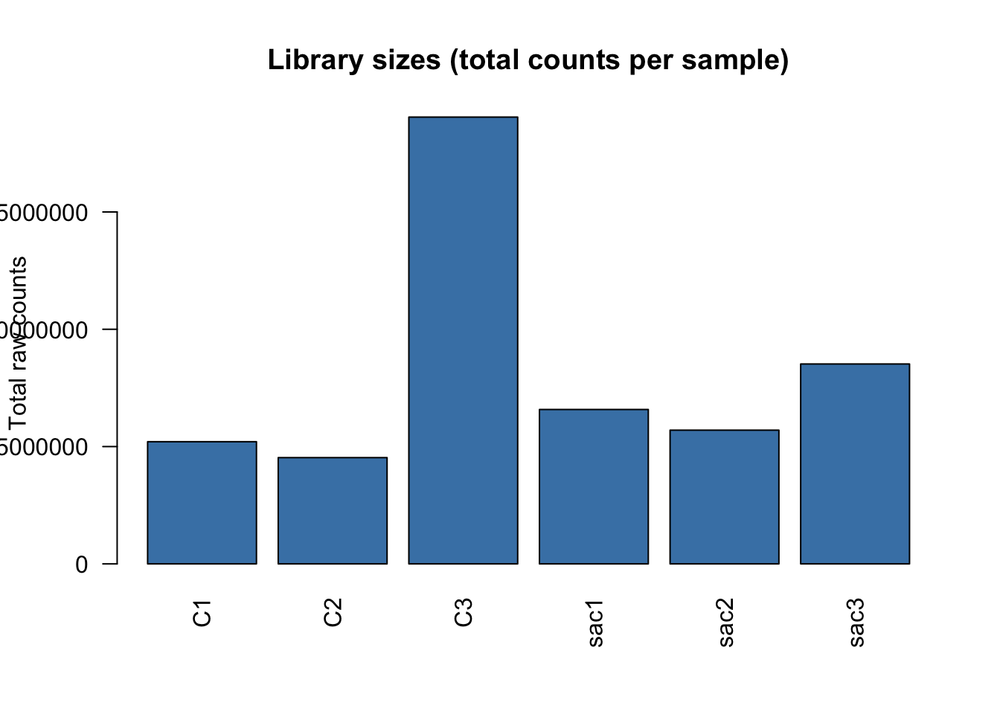

4.6 Sanity Checks
📌 Remember: Always do a sanity check!
4.6.1 Are We Working with Raw Counts?
DESeq2 requires raw, un-normalised integer counts. Feeding it normalised values (TPM, FPKM) will produce incorrect results.
📌 Remember: Always verify your input before proceeding.
## C1 C2 C3 sac1 sac2 sac3
## b0001 0 0 1 1 0 0
## b0002 2754 2375 8666 5901 4451 6523
## b0003 1085 899 4300 1882 1410 2199
## b0004 1851 1484 7284 2973 2182 3516
## b0005 4 4 3 15 9 5
## b0006 250 222 1011 269 288 439p <- hist(
as.numeric(count_genes[1, ]),
main = paste("Raw counts —", rownames(count_genes)[1]),
xlab = "Raw count",
col = "steelblue",
plot = FALSE
)
plot(p, col = "steelblue",
main = paste("Raw counts —", rownames(count_genes)[1]),
xlab = "Raw count")
Raw E. coli RNA-seq counts are typically in the thousands to millions range (library sizes ~5–50 M reads for bacterial experiments).
A highly right-skewed distribution is expected and correct at this stage.
4.6.2 Pre-filtering Low-count Genes
Genes with very few counts across all samples carry no statistical power and inflate the multiple testing burden. We remove genes that do not have at least 10 counts in a minimum number of samples (equal to the size of the smallest group, i.e., 3 replicates here).
E. coli has ~4,300 genes — after filtering you should retain the majority of them.
smallestGroupSize <- min(table(samples_info$condition))
keep <- rowSums(counts(dds) >= 10) >= smallestGroupSize
dds <- dds[keep, ]
cat("Genes before filtering:", nrow(counts(dds)) + sum(!keep), "\n")## Genes before filtering: 4523## Genes after filtering: 3698## Genes removed : 8254.6.3 Factor Order and Reference Level
The first factor level is always the reference (denominator) in DESeq2 comparisons. Setting it explicitly ensures that fold changes are computed in the intended direction: treatment vs control, not the reverse.
## [1] "control" "treatment"📌 Remember: The reference level determines the direction of fold changes. A positive log2FC means higher expression in the treatment relative to control.